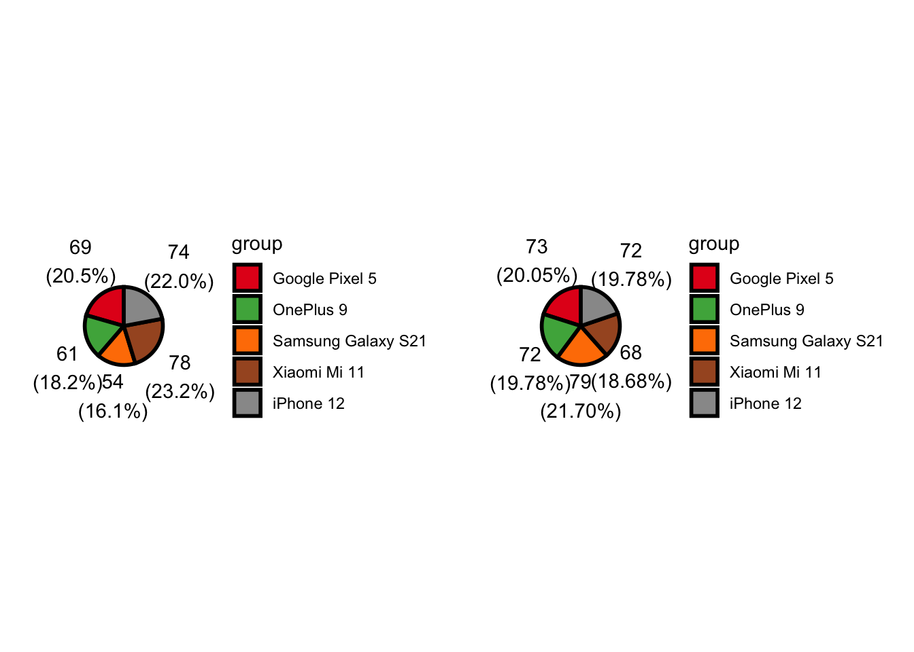

## Task 1: Read in the Data and Modify
library(tidyverse)── Attaching core tidyverse packages ──────────────────────── tidyverse 2.0.0 ──
✔ dplyr 1.1.4 ✔ readr 2.1.5
✔ forcats 1.0.0 ✔ stringr 1.5.1
✔ ggplot2 3.5.1 ✔ tibble 3.2.1
✔ lubridate 1.9.3 ✔ tidyr 1.3.1
✔ purrr 1.0.2
── Conflicts ────────────────────────────────────────── tidyverse_conflicts() ──
✖ dplyr::filter() masks stats::filter()
✖ dplyr::lag() masks stats::lag()
ℹ Use the conflicted package (<http://conflicted.r-lib.org/>) to force all conflicts to become errorslibrary(stringr)
library(ggcorrplot)
library(ggdensity)
library(ggpie)
#Read in the cell phone user behavior data
usrbhvr_data <- read_csv("user_behavior_dataset.csv")Rows: 700 Columns: 11
── Column specification ────────────────────────────────────────────────────────
Delimiter: ","
chr (3): Device Model, Operating System, Gender
dbl (8): User ID, App Usage Time (min/day), Screen On Time (hours/day), Batt...
ℹ Use `spec()` to retrieve the full column specification for this data.
ℹ Specify the column types or set `show_col_types = FALSE` to quiet this message.#Fix variable names since these have spaces in some cases
names(usrbhvr_data) <- gsub("\\([^\\)]+\\)", "",
str_replace_all(names(usrbhvr_data),
c(" " = "")))
# Convert the data into a tibble with factor variables.
# User Behavior Class (ubc)
# MB/day 0 <= x < 300: ubc = 1
# 300 <= x < 600: ubc = 2
# 600 <= x < 1000: ubc = 3
# 1000 <= x < 1500: ubc = 4
# 1500 <= x: ubc = 5
usrbhvr_data <- usrbhvr_data |>
mutate(
AgeF = dplyr::case_when(
Age >= 18 & Age < 25 ~ "18-24",
Age >= 25 & Age < 35 ~ "25-34",
Age >= 35 & Age < 45 ~ "35-44",
Age >= 45 & Age < 55 ~ "45-54",
Age >= 55 ~ "55+"
),
# Convert to factor
AgeF = factor(
AgeF,
level = c("18-24", "25-34","35-44","45-54","55+")
)
) |>
mutate(UserBehaviorClass =
factor(UserBehaviorClass,
levels=c(1,2,3,4,5),
labels=c("Between 0 and 300 MB/day",
"Between 300 and 600 MB/day",
"Between 600 and 1,000 MB/day",
"Between 1,000 and 1,500 MB/day",
"More than 1,500 MB/day")),
OperatingSystem =
factor(OperatingSystem,
levels=c("Android",
"iOS")),
DeviceModel =
factor(DeviceModel,
levels=c("Google Pixel 5",
"OnePlus 9",
"Samsung Galaxy S21",
"Xiaomi Mi 11",
"iPhone 12")),
Gender =
factor(Gender,
levels=c("Female","Male"))
) |>
mutate(AppUsageTime = as.double(AppUsageTime))
usrbhvr_data# A tibble: 700 × 12
UserID DeviceModel OperatingSystem AppUsageTime ScreenOnTime BatteryDrain
<dbl> <fct> <fct> <dbl> <dbl> <dbl>
1 1 Google Pixel 5 Android 393 6.4 1872
2 2 OnePlus 9 Android 268 4.7 1331
3 3 Xiaomi Mi 11 Android 154 4 761
4 4 Google Pixel 5 Android 239 4.8 1676
5 5 iPhone 12 iOS 187 4.3 1367
6 6 Google Pixel 5 Android 99 2 940
7 7 Samsung Galaxy… Android 350 7.3 1802
8 8 OnePlus 9 Android 543 11.4 2956
9 9 Samsung Galaxy… Android 340 7.7 2138
10 10 iPhone 12 iOS 424 6.6 1957
# ℹ 690 more rows
# ℹ 6 more variables: NumberofAppsInstalled <dbl>, DataUsage <dbl>, Age <dbl>,
# Gender <fct>, UserBehaviorClass <fct>, AgeF <fct>### Produce numerical and graphical summaries to investigate the data.
#### One-way and Two-way contingency tables
# User_Behavior_Class
table(usrbhvr_data$UserBehaviorClass,dnn=list("UserBehaviorClass"))UserBehaviorClass
Between 0 and 300 MB/day Between 300 and 600 MB/day
136 146
Between 600 and 1,000 MB/day Between 1,000 and 1,500 MB/day
143 139
More than 1,500 MB/day
136 # Operating_System
table(usrbhvr_data$OperatingSystem,dnn=list("OperatingSystem"))OperatingSystem
Android iOS
554 146 # Device_Model
table(usrbhvr_data$DeviceModel,dnn=list("DeviceModel"))DeviceModel
Google Pixel 5 OnePlus 9 Samsung Galaxy S21 Xiaomi Mi 11
142 133 133 146
iPhone 12
146 # Gender
table(usrbhvr_data$Gender,dnn=list("Gender"))Gender
Female Male
336 364 #User_Behavior_Class + Operating_System
table(usrbhvr_data$UserBehaviorClass,
usrbhvr_data$OperatingSystem,
dnn=list("UserBehaviorClass","OperatingSystem")) OperatingSystem
UserBehaviorClass Android iOS
Between 0 and 300 MB/day 114 22
Between 300 and 600 MB/day 114 32
Between 600 and 1,000 MB/day 111 32
Between 1,000 and 1,500 MB/day 110 29
More than 1,500 MB/day 105 31#User_Behavior_Class + Device_Model
table(usrbhvr_data$UserBehaviorClass,
usrbhvr_data$DeviceModel,
dnn=list("UserBehaviorClass","DeviceModel")) DeviceModel
UserBehaviorClass Google Pixel 5 OnePlus 9 Samsung Galaxy S21
Between 0 and 300 MB/day 32 25 26
Between 300 and 600 MB/day 26 31 30
Between 600 and 1,000 MB/day 33 25 21
Between 1,000 and 1,500 MB/day 24 26 33
More than 1,500 MB/day 27 26 23
DeviceModel
UserBehaviorClass Xiaomi Mi 11 iPhone 12
Between 0 and 300 MB/day 31 22
Between 300 and 600 MB/day 27 32
Between 600 and 1,000 MB/day 32 32
Between 1,000 and 1,500 MB/day 27 29
More than 1,500 MB/day 29 31#User_Behavior_Class + Gender
table(usrbhvr_data$UserBehaviorClass,
usrbhvr_data$Gender,
dnn=list("UserBehaviorClass","Gender")) Gender
UserBehaviorClass Female Male
Between 0 and 300 MB/day 63 73
Between 300 and 600 MB/day 64 82
Between 600 and 1,000 MB/day 82 61
Between 1,000 and 1,500 MB/day 67 72
More than 1,500 MB/day 60 76#Operating_System + Device_Model
table(usrbhvr_data$OperatingSystem,
usrbhvr_data$DeviceModel,
dnn=list("OperatingSystem","DeviceModel")) DeviceModel
OperatingSystem Google Pixel 5 OnePlus 9 Samsung Galaxy S21 Xiaomi Mi 11
Android 142 133 133 146
iOS 0 0 0 0
DeviceModel
OperatingSystem iPhone 12
Android 0
iOS 146#Operating_System + Gender
table(usrbhvr_data$OperatingSystem,
usrbhvr_data$Gender,
dnn=list("OperatingSystem","Gender")) Gender
OperatingSystem Female Male
Android 262 292
iOS 74 72#Device_Model + Gender
table(usrbhvr_data$DeviceModel,
usrbhvr_data$Gender,
dnn=list("DeviceModel","Gender")) Gender
DeviceModel Female Male
Google Pixel 5 69 73
OnePlus 9 61 72
Samsung Galaxy S21 54 79
Xiaomi Mi 11 78 68
iPhone 12 74 72#### Numerical summaries (means, medians, sds, etc.) for quantitative variables
#### at levels of categorical variables
#csg = center spread at levels of categorical variables
usrbhvr_data_csg <- usrbhvr_data |>
group_by(DeviceModel,OperatingSystem,Gender,UserBehaviorClass) |>
drop_na(DeviceModel,OperatingSystem,Gender,UserBehaviorClass) |>
summarize(across(c(AppUsageTime,
ScreenOnTime,
BatteryDrain,
NumberofAppsInstalled,
DataUsage,
Age),
list("mean" = mean,
"median" = median,
"st_dev" = sd,
"variance" = var,
"IQR" = IQR),
.names = "{.fn}_{.col}"))`summarise()` has grouped output by 'DeviceModel', 'OperatingSystem', 'Gender'.
You can override using the `.groups` argument.usrbhvr_data_csg# A tibble: 50 × 34
# Groups: DeviceModel, OperatingSystem, Gender [10]
DeviceModel OperatingSystem Gender UserBehaviorClass mean_AppUsageTime
<fct> <fct> <fct> <fct> <dbl>
1 Google Pixel 5 Android Female Between 0 and 300 MB… 62.1
2 Google Pixel 5 Android Female Between 300 and 600 … 128.
3 Google Pixel 5 Android Female Between 600 and 1,00… 252.
4 Google Pixel 5 Android Female Between 1,000 and 1,… 411
5 Google Pixel 5 Android Female More than 1,500 MB/d… 554.
6 Google Pixel 5 Android Male Between 0 and 300 MB… 60.4
7 Google Pixel 5 Android Male Between 300 and 600 … 133.
8 Google Pixel 5 Android Male Between 600 and 1,00… 237
9 Google Pixel 5 Android Male Between 1,000 and 1,… 408.
10 Google Pixel 5 Android Male More than 1,500 MB/d… 538.
# ℹ 40 more rows
# ℹ 29 more variables: median_AppUsageTime <dbl>, st_dev_AppUsageTime <dbl>,
# variance_AppUsageTime <dbl>, IQR_AppUsageTime <dbl>,
# mean_ScreenOnTime <dbl>, median_ScreenOnTime <dbl>,
# st_dev_ScreenOnTime <dbl>, variance_ScreenOnTime <dbl>,
# IQR_ScreenOnTime <dbl>, mean_BatteryDrain <dbl>, median_BatteryDrain <dbl>,
# st_dev_BatteryDrain <dbl>, variance_BatteryDrain <dbl>, …#### Create at least six plots
# (1) Histogram for BatteryDrain across OperatingSystem
ggplot(usrbhvr_data, aes(x = BatteryDrain)) +
geom_histogram(alpha=0.5,
aes(fill = OperatingSystem,
col=I("black")),
position = "identity") +
scale_fill_manual(values=c("#E69F00", "#56B4E9")) +
xlab("Battery Drain (mAh/day)") +
ylab("Number of Phones") +
ggtitle(
str_wrap(
"Number of Phones with Battery Drain Rate, by Operating System",
45)) +
theme(plot.title = element_text(hjust = 0.5))`stat_bin()` using `bins = 30`. Pick better value with `binwidth`.# (2) Histogram for BatteryDrain across Gender
ggplot(usrbhvr_data, aes(x = BatteryDrain)) +
geom_histogram(alpha=0.5,
aes(fill = Gender,
col=I("black")),
position = "identity") +
scale_fill_manual(values=c("#E69F00", "#56B4E9")) +
xlab("Battery Drain (mAh/day)") +
ylab("Number of Phones") +
ggtitle(
str_wrap(
"Number of Phones with Battery Drain Rate, by Gender",
45)) +
theme(plot.title = element_text(hjust = 0.5))`stat_bin()` using `bins = 30`. Pick better value with `binwidth`.# (3) Boxplot for BatteryDrain across Gender
ggplot(usrbhvr_data) +
geom_boxplot(
aes(x = DeviceModel,
y = BatteryDrain,
fill = Gender)) +
scale_fill_manual(
values=c("#E69F00", "#56B4E9")) +
xlab("Gender") +
ylab("Battery Drain (mAh/day)") +
ggtitle(
str_wrap(
"Box Plot of Battery Drain Per Day, by Gender",
45)) +
theme(plot.title = element_text(hjust = 0.5))# (4) Scatterplot for BatteryDrain versus DataUsage, by Operating System
ggplot(usrbhvr_data |> drop_na(DataUsage, BatteryDrain, OperatingSystem),
aes(x = DataUsage, y = BatteryDrain, color = OperatingSystem)) +
geom_point() +
scale_color_manual(values=c("#E69F00", "#56B4E9")) +
geom_jitter(width = 0.2, alpha = 0.3)# (5) Scatterplot for ScreenOnTime versus DataUsage, by Gender
ggplot(usrbhvr_data |> drop_na(DataUsage, ScreenOnTime, Gender),
aes(x = DataUsage, y = ScreenOnTime, color = Gender)) +
geom_point() +
geom_jitter(width = 0.2, alpha = 0.3) +
facet_wrap(~ Gender)# (6) Correlation plot (ggcorrplot)
# Compute a correlation matrix for numeric variables
usrbhvr_numdata <- usrbhvr_data |> filter(OperatingSystem=="Android") |> select(
-c(UserID,Age,AgeF,DeviceModel,OperatingSystem,Gender,UserBehaviorClass))
corr <- round(cor(usrbhvr_numdata), 1)
ggcorrplot(corr)
# (7) Correlation plot (ggdensity)
ggplot(usrbhvr_data,
aes(DataUsage, AppUsageTime, fill = AgeF)) +
geom_hdr(xlim = c(160, 240), ylim = c(30, 70)) +
geom_point(shape = 21) +
facet_wrap(vars(OperatingSystem))# (8) Pie charts
pf <- ggpie(usrbhvr_data |> filter(Gender=="Female"),
group_key = "DeviceModel",
count_type = "full",
label_info = "all",
label_type = "horizon",
label_size = 4,
label_pos = "out" )
pm <- ggpie(usrbhvr_data |> filter(Gender=="Male"),
group_key = "DeviceModel",
count_type = "full",
label_info = "all",
label_type = "horizon",
label_size = 4,
label_pos = "out" )
cowplot::plot_grid(pf,pm,ncol = 2)
#Numerical Variables
num_vars <- c("User ID" = "UserID",
"App Usage Time (min/day)" = "AppUsageTime",
"Screen On Time (hrs/day)" = "ScreenOnTime",
"Battery Drain (mAh/day)" = "BatteryDrain",
"Number of Apps Installed" = "NumberofAppsInstalled",
"Data Usage (MB/day)" = "DataUsage",
"Age (years)" = "Age")
#Categorical Variables
cat_vars <- c("Device Model" = "DeviceModel",
"Operating System" = "OperatingSystem",
"Gender" = "Gender",
"User Behavior Class" = "UserBehaviorClass",
"Age Ranges" = "AgeF")